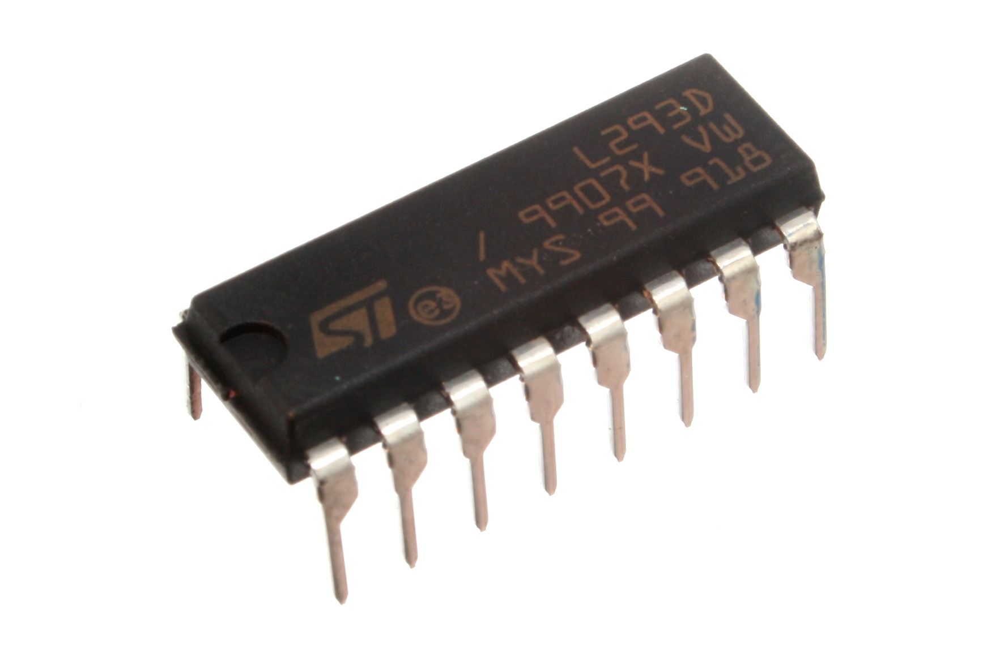
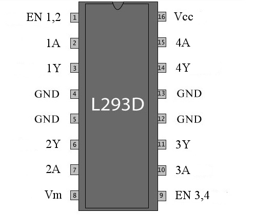
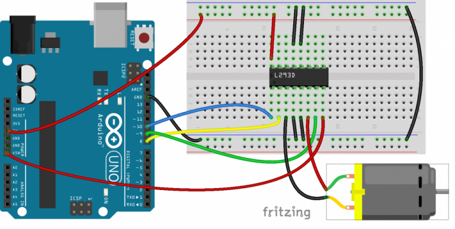

El circuito integrado L293D
El integrado L293D es uno de los más utilizados en el control de motores de corriente continua.
DISTRIBUCIÓN DE CONTACTOS

Tiene dieciséis patillas, cuya distribución te doy en la tabla siguiente:
| NÚMERO | NOMBRE | FUNCIÓN |
| 1 | 1,2 EN | Activa las líneas 1 y 2 |
| 2 | 1A | Entrada 1 |
| 3 | 1Y | Salida 1 |
| 4 | GND | Masa |
| 5 | GND | Masa |
| 6 | 2Y | Salida 2 |
| 7 | 2A | Entrada 2 |
| 8 | Vm |
Alimentación del motor |
| 9 | 3,4 EN | Activa las líneas 3 y 4 |
| 10 | 3A | Entrada 3 |
| 11 | 3Y | Salida 3 |
| 12 | GND | Masa |
| 13 | GND | Masa |
| 14 | 4Y | Salida 4 |
| 15 | 4A | Entrada 4 |
| 16 | Vcc | Alimentación del circuito integrado |
TABLA DE VERDAD DEL CIRCUITO
| INPUTS | OUTPUT | |
| A | EN | Y |
| ALTO | ALTO | ALTO |
| BAJO | ALTO | BAJO |
| X | BAJO | ALTA IMPEDANCIA |
Teniendo en cuenta esto, conectaremos los dos terminales de nuestro motor a las líneas 1 y 2 del L293D, por ejemplo.
Si hacemos eso, podremos poner los terminales 1A y 2A en 0 ó en 1, lo cual producirá el siguiente efecto (siempre que EN 1,2 esté habilitada):
| 1A | 1Y | 2A | 2Y | MOTOR |
| 0 | 0 | 0 | 0 | PARO |
| 0 | 0 | 1 | 1 | GIRO A DERECHAS |
| 1 | 1 | 0 | 0 | GIRO A IZQUIERDAS |
| 1 | 1 | 1 | 1 | PARO |
NOTA: ES FUNDAMENTAL PONER LAS TIERRAS DE ARDUINO Y DEL L293D JUNTAS, PARA QUE NO SE PRODUZCAN INTERFERENCIAS.
Veamos que son los diferentes pines del L293D:
- El pin 16, Vss, son los 5V con los que alimentamos el chip y el pin 8, Vs, es la tensión con la que alimentamos el motor.
- Los pines del 1 al 7 controlan el primer motor y los pines 9 a 15 controlan el segundo motor.
- El pin 1, Enable1, Activa el uso del motor 1. Con un valor HIGH, el motor puede girar dependiendo del valor de I1 e I2. Si es LOW se para independientemente de los valores del resto de pines
- Los pines 2 y 7 son los pines de control para el motor 1, e irán conectados a nuestros Arduino para controlar el sentido de giro.
- Los pines 3 y 6 son la salida a la que se conecta el motor 1, cuya polaridad se invierte en función los valores de 2 y 7.
- En el diagrama de arriba veis que hay pines equivalentes para el motor 2 y cuales son.
- Los pines 4, 5,12 y 13 van a GND.
Hagamos un resumen de conexiones:
| PIN L293D | PIN ARDUINO | DESCRIPCIÓN |
|---|---|---|
| 1 | 10 | Enable |
| 2 | 9 | Input 1 |
| 3 | – | Motor1 + |
| 4,5, 12,13 | GND | GND |
| 6 | – | Motor1 – |
| 7 | 8 | Input 2 |
| 8 | Vin | Alimentación del motor |
| 16 | 5V | Alimentación del L293D |
Por tanto tenemos que activar el pin Enable para que el motor gire y después usamos los pines Input1 e Input2 con valore opuestos para hacer girar el motor en una dirección o en la contraria.
El esquema
Una vez que tenemos claras las conexiones, el diagrama de protoboard del chip L293D a nuestro Duino será algo así:

El programa.
Veamos el programa que vamos a usar para controlar este motor. Vamos a usar los 3 pines de la tabla anterior. Arduino Pin 10 es el enable del Motor 1 y usamos los pines 8 y 9 para controlar el sentido de giro. Por tanto:
#define e1 10 // Enable Pin for motor 1
#define i1 8 // Control pin 1 for motor 1
#define i2 9 // Control pin 2 for motor 1
void setup()
{
for (int i = 8 ; i<11 ; i++)
pinMode( i, OUTPUT);
}
void loop(){
digitalWrite(e1, HIGH); // Activamos Motor1
digitalWrite(i1, HIGH); // Arrancamos
digitalWrite(i2, LOW);
delay(3000);
digitalWrite(e1, LOW); // Paramos Motor 1
delay(1000);
digitalWrite(e1, HIGH); // Activamos Motor1
digitalWrite(i1, LOW); //cambio de dirección
digitalWrite(i2, HIGH);
delay(3000);
digitalWrite(e1, LOW); // Paramos Motor 1
delay(1000);
}
Activamos el Enable1 para arrancar Motor1, y luego usamos i1 e i2 con valores invertidos. El motor arranca y lo paramos a los 3 segundos. Pasado 1 segundo levantamos de nuevo el Enable1 y al intercambiar los valores de i1 e i2 el giro del motor se inicia y en la dirección contraria.
Velocidad de giro
Hemos conectado el pin Enable1 al pin Arduino 10 que es PWM y los L293D vienen diseñados para variar la velocidad de giro de los motores correspondientes con la tensión aplicada a este pin, por lo que resulta trivial variar la velocidad del motor, sin más darle valores analógicos.
Si por ejemplo añadimos un potenciómetro de nuevo conectado al A1, podemos escribir este valor directamente (dividido por 4 para que sea un valor entre 0 y 253) al pin 10 como analógico, sustituyendo la línea
digitalWrite(e1, HIGH); // Activamos Motor1
Por esta otra que escribe un valor analógico:
analogWrite(e1, analogRead(A1)/4);
Fijaremos la velocidad de giro del motor en función del valor del potenciómetro. El programa corregido, quedaría poco más o menos así:
#define e1 10 // Enable Pin for motor 1
#define i1 8 // Control pin 1 for motor 1
#define i2 9 // Control pin 2 for motor 1
void setup()
{
for (int i = 8 ; i<11 ; i++)
pinMode( i, OUTPUT);
}
void loop(){
analogWrite(e1,analogRead(A1)/4);
// Activamos Motor1
digitalWrite(i1, HIGH); // Arrancamos
digitalWrite(i2, LOW);
delay(3000);
digitalWrite(e1, LOW); // Paramos Motor 1
delay(1000);
analogWrite(e1,analogRead(A1)/4);
// Activamos Motor1
digitalWrite(i1, LOW); // cambio de dirección
digitalWrite(i2, HIGH);
delay(3000);
digitalWrite(e1, LOW); // Paramos Motor 1
delay(1000);
}
Obra publicada con Licencia Creative Commons Reconocimiento No comercial Compartir igual 4.0